reason
01
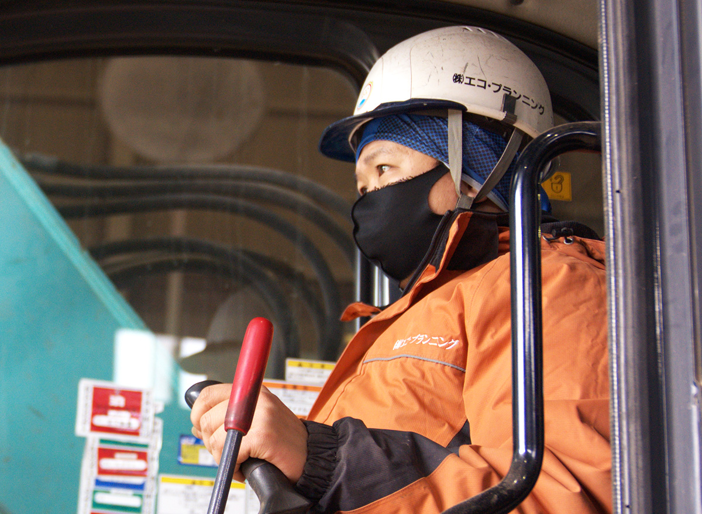
エコ・プランニングが選ばれる理由
創業60年の圧倒的な
キャリア
解体工事、産業廃棄物処理という業界で、環境や社会の為に様々な変化と挑戦をし続けて参りました。
街の純度を高め、人々の暮らしを守る
私たちについて
お客様と社会の課題に、
私たちはチャレンジし続けます
2014年の事業スタート以来、三重から東海、関東、そして全国へ。私たちは解体工事や産業廃棄物処理、リサイクル事業のプロとして、全力で駆け抜けてきました。今では全国のハウスメーカー様など、1,400社を超えるお客様に選ばれる実績を築いています。
私たちが何より大切にしているのは、関わるすべての人に対して「誠実であること」です。解体や産業廃棄物の処分は、目の前の課題を解決する手段に過ぎません。お客様の不安や不満に寄り添い、その「困った」を心までスッキリさせるために動き続けること。それこそが私たちの存在意義です。未来を共にするパートナーとして、ぜひエコ・プランニングを頼ってください。
事業内容
各種建物解体工事、産業廃棄物の運搬・リサイクルや処理に至るまで、トータルで行います。
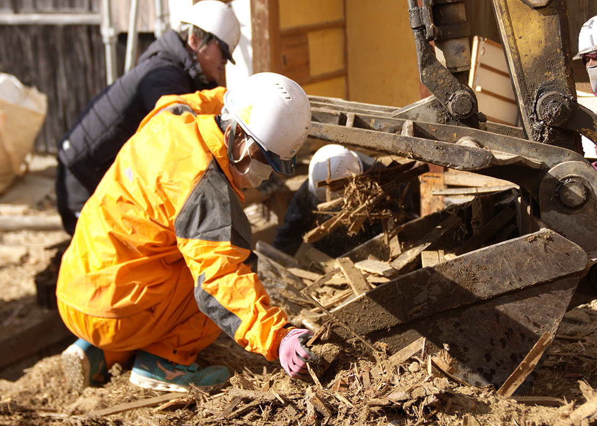
解体工事とは、今まで家族が過ごした大切な家を壊す工事。または仲間と過ごした場所、切磋琢磨した会社や施設を壊す工事。そんな思い出が沢山つまった家を「ただ壊せばいい」そんな思いで仕事をしたくありません。
詳しくはこちら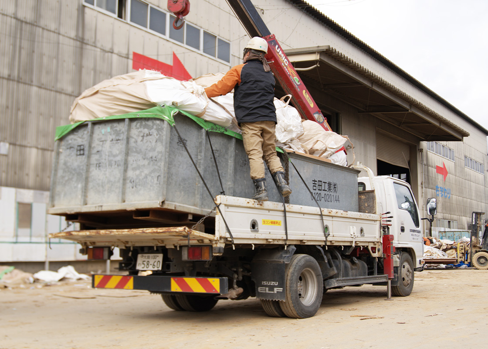
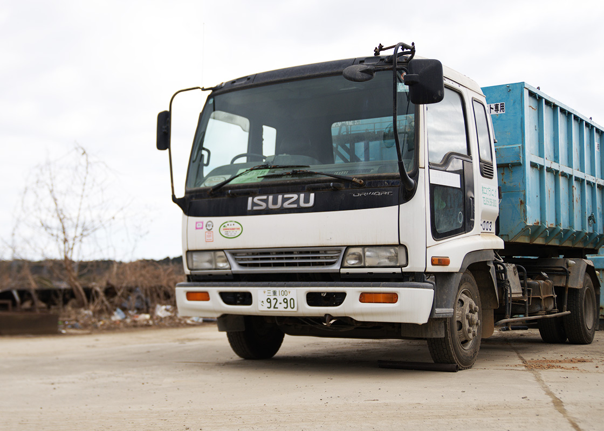
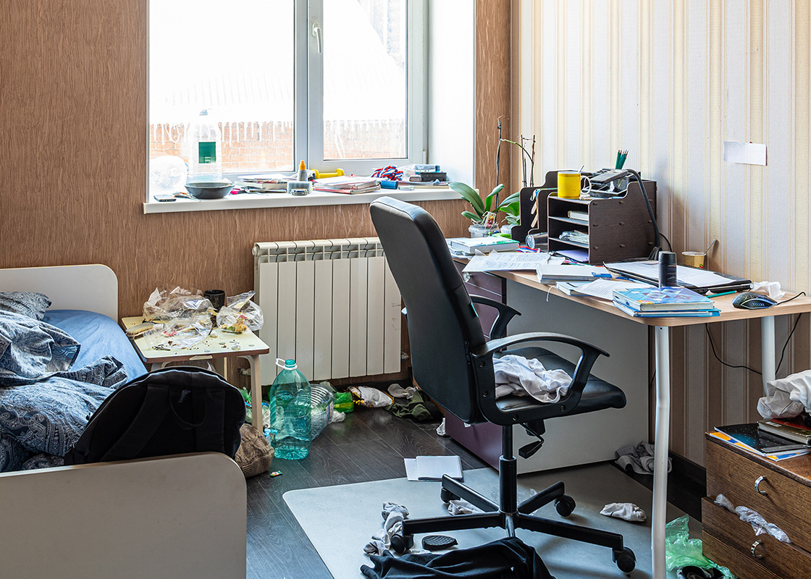
元タレントの実業家・入江慎也氏が率いる清掃のプロ「ピカピカ」とのFC契約により実現した、ハウスクリーニング。解体・不用品回収との相乗効果を活かし、住まいの困りごと全般をワンストップで解決いたします。
詳しくはこちらエコ・プランニングが選ばれる5つの理由

エコ・プランニングが選ばれる理由
解体工事、産業廃棄物処理という業界で、環境や社会の為に様々な変化と挑戦をし続けて参りました。
エコ・プランニングが選ばれる理由
土曜や祝日も稼働しており、早朝の持ち込みや夜間工事などご要望をお気軽にご相談ください。
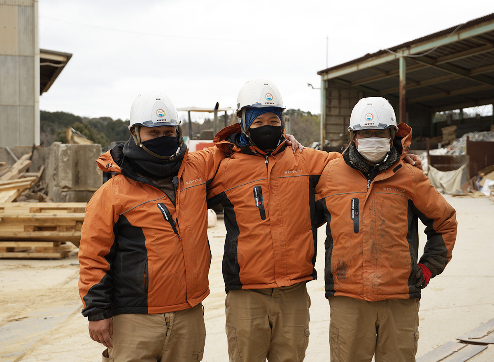
エコ・プランニングが選ばれる理由
リサイクル率の向上を追求しながら、お客様が驚くような満足を追求し続けます！

エコ・プランニングが選ばれる理由
収集運搬から最終処分まで一元管理。不透明なリスクを排除し、確実な適正処理を約束。
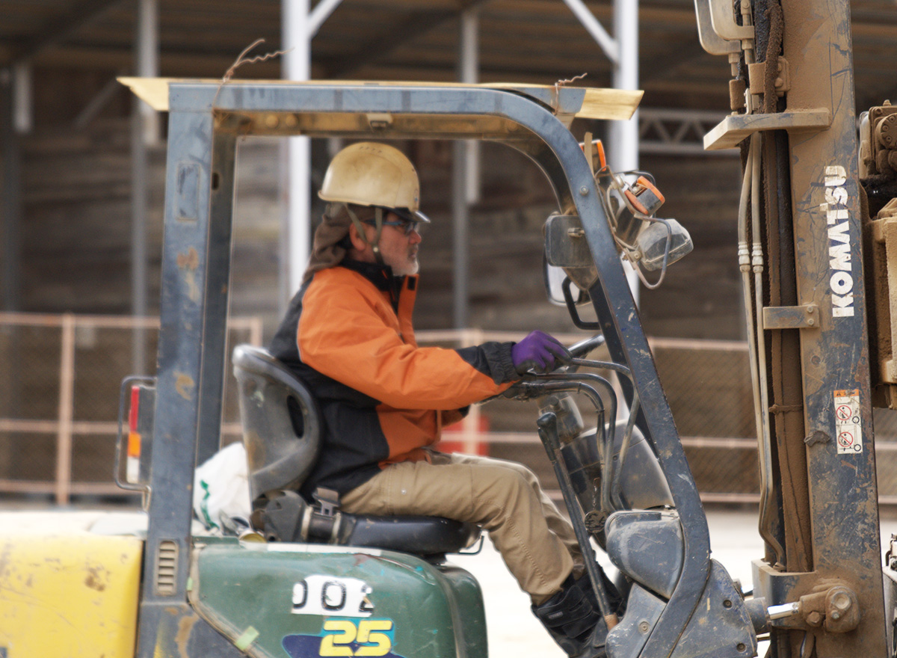
エコ・プランニングが選ばれる理由
三重県下最大級の取引額と豊富な車両。現場を止めない圧倒的なスピード回収を叶えます。
他社との違い
建築業界につきまとう「きつい・汚い・危険」という旧態依然としたイメージ。私たちはこれを「かっこいい・稼げる・感動」の新しいスタンダードへと変革すべく、常識にとらわれない挑戦を続けています。例えば、ペルーでの環境・リサイクル事業への進出や、地域を巻き込んだ大型フェスの開催など、同業他社が踏み込まない領域にも果敢に挑戦。「世間が抱く業界のイメージを打破しよう」という強い意志のもと、常にワクワクしながら新しい価値を創造し、業界の未来を面白く切り拓く開拓者であり続けます。
私たちが日々向き合っているのは、単なる「ゴミ」や「古い建物」ではありません。建物を解体し、廃棄物を適正に処理し、リサイクルして循環させることで、その先にある「地域の皆さまの安全で快適な暮らし」を支えています。「街の純度を高め、人々の暮らしを守る」というパーパスを胸に、地域社会に必要不可欠なインフラであるという強い自負を持っています。事業を通じた環境保全はもちろん、街全体を笑顔にし、人々の心までスッキリさせるような誠実な取り組みをこれからも地域と共に推進していきます。
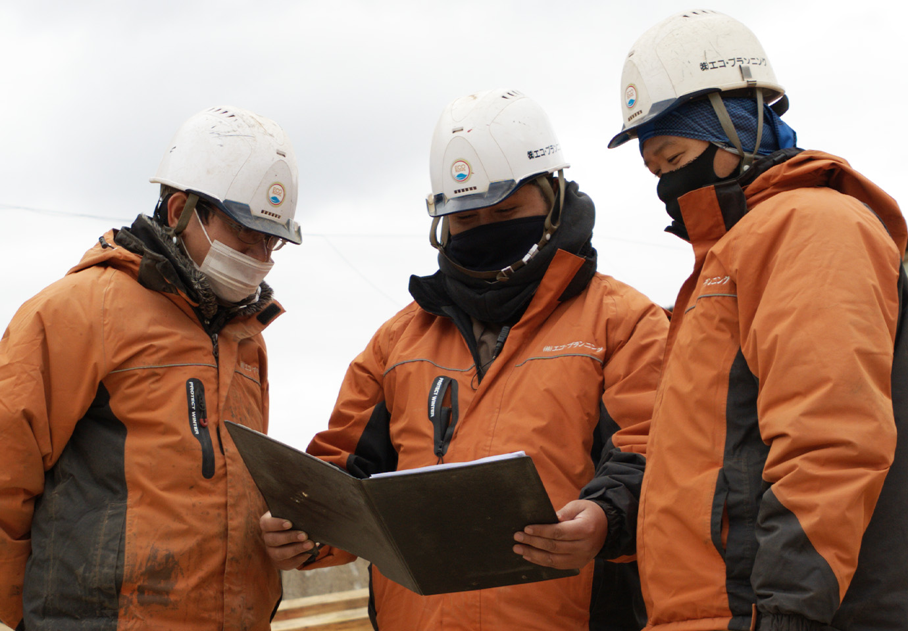
エコ・プランニング最大の原動力は、年齢や国籍、経歴もバラバラな個性豊かな社員たちです。異業種から飛び込んできたメンバーも多く、従来の業界にはなかった柔軟な発想や高いホスピタリティを持ち合わせています。「自ら楽しみながら、関わる人達に尽くそう」という価値観を共有し、威圧感のない親しみやすい対応で、お客様の細かな「困った」に寄り添います。多様なバックグラウンドを持つメンバーが集まることで生まれる化学反応が、枠にとらわれない柔軟な課題解決力と、誠実で心温まるサービスを生み出しています。
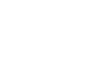
解体のプロ
自社処分場ありお客様の声
エコ・プランニングに届いた
お客様のお喜びの声を、一部ですがご紹介させていただいております
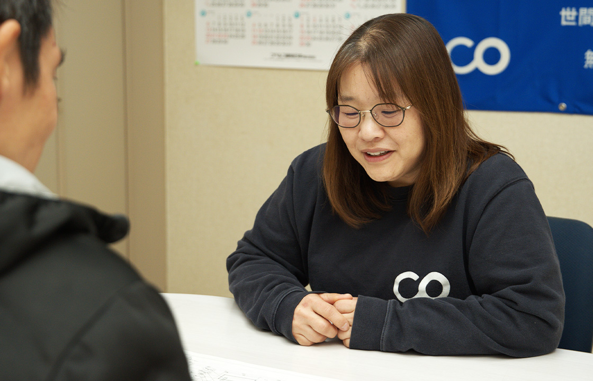
Interview#1

Interview#2

Interview#3
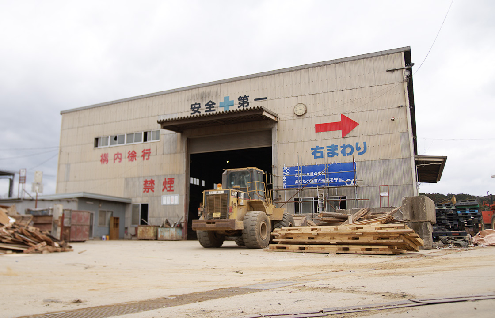
Interview#4
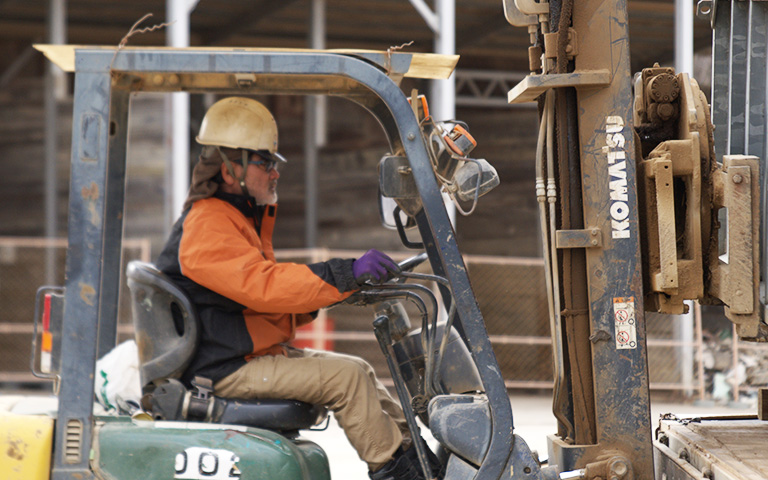
Interview#5
実績のご紹介
エコ・プランニングがこれまでに携わった
解体工事や、さまざまなソリューションの実績をご紹介します
掲載内容は一部です。より詳しい施工内容はお問い合わせください
ご依頼の流れ

電話またはお問い合わせフォームより、
ご連絡お願いいたします。

現地調査を行ない、詳細なお見積りを
ご提出させていただきます。

施工内容やお見積り金額に疑問や
不満がなければご契約成立となります。

弊社にて各種提出書類を作成し、提出しますので、
お手を煩わせません。

下記はすべてダミーテキストです。
この度は、弊社をご利用いただき誠にありがとうございます。

細心の注意を払い、慎重かつ迅速に解体工事を進めさせていただきます。

解体後、お客様に現場を見ていただき、OKをいただきましたら、
完了となります。

後日、請求書を発行いたしますので、お支払いをお願いいたします。
現地調査を行ない、詳細なお見積りをご提出させていただきます。
電話またはお問い合わせフォームより、
ご連絡お願いいたします。
現地、御社事務所等にて廃棄物の確認をさせていただきます。
設置場所の地図と設置箇所の図面等をお送りください。
契約や見積もりもその後提出いたします。
お持込の方については、これ以上の手続きは必要ありません。
予約不要でいつでも持込可能です。
お電話、LINE、メールにて弊社事務所まで所定の依頼書をお送りいただき、その後現場にお伺いします。必要な情報をご提供いただき、使用用途に応じてご希望のサイズのコンテナを設置させていただきます。
お電話、LINE、メールにて弊社事務所まで所定の依頼書をお送りいただき、その後現場にお伺いします。
最短で翌日〜3日にて回収にお伺いいたします。
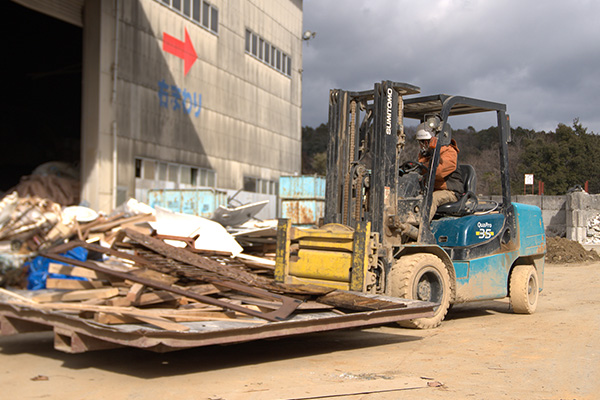
内容物に応じて適切な工場に搬入し、処分いたします。
予約不要でいつでも持込可能です。
搬入可能日：月曜日〜土曜日
搬入可能時間：8:00〜12:00、12:50〜17:00
土曜日や祝日も稼働しておりますので、他社に搬入ができない場合は安心してお持ち込みください。
内容物に応じて適切な工場に搬入し、処分いたします。
電話またはお問い合わせフォームより、
ご連絡お願いいたします。
下見を行ない、詳細なお見積りをご提出させていただきます。
お見積りにご納得頂けましたら、はじめてご契約となります。お見積りに不安が残る場合は、お気軽にご相談ください。また、この時点でのキャンセルも承っておりますので、ご安心ください。
スタッフが丁寧かつスピーディに不用品を回収・買取させていただきます。
不用品の回収・買取が終わったところで最終的にお客様に現場を確認いただき、作業終了となります。また、買取の場合は金額の確認もして頂きます。
作業完了をご確認いただいた後、お支払いとなります。お支払い方法は現金やクレジットカードにも対応しておりますので、お気軽にお申し出ください。買取の場合は、買取金額を確認して頂きお支払いになります。
まずはお電話またはLINE・メールフォームにてご連絡ください。
ご希望の品目や数量、納期、ご用途などをお伺いします。
お伺いした内容をもとに、在庫状況や価格、納品方法などをご案内します。
必要に応じてお見積書を発行いたします。
内容にご納得いただけましたら、ご注文確定となります。
支払方法についてもご相談可能です（現金・クレジットカードなど対応）。
ご指定の日時に、現地引き取りまたは現場への配送にてお渡しいたします。
配送可能エリアはご相談ください。
納品後のご質問や、継続的なご発注にも迅速に対応いたします。
大量注文や定期購入のご相談も歓迎です。

お問い合わせ
解体、産業廃棄物回収・持込、
不用品回収からハウスクリーニングまで
お困りごとは何でもお気軽にご相談ください。
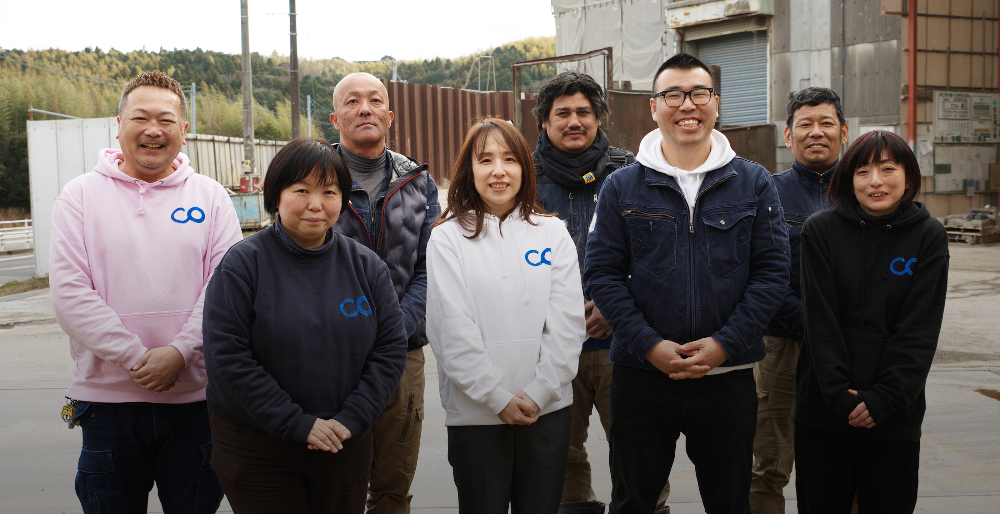
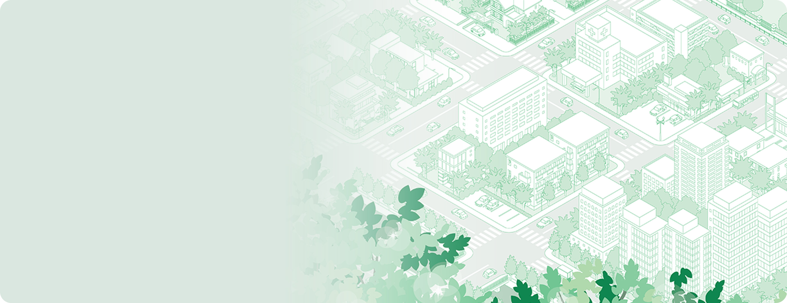